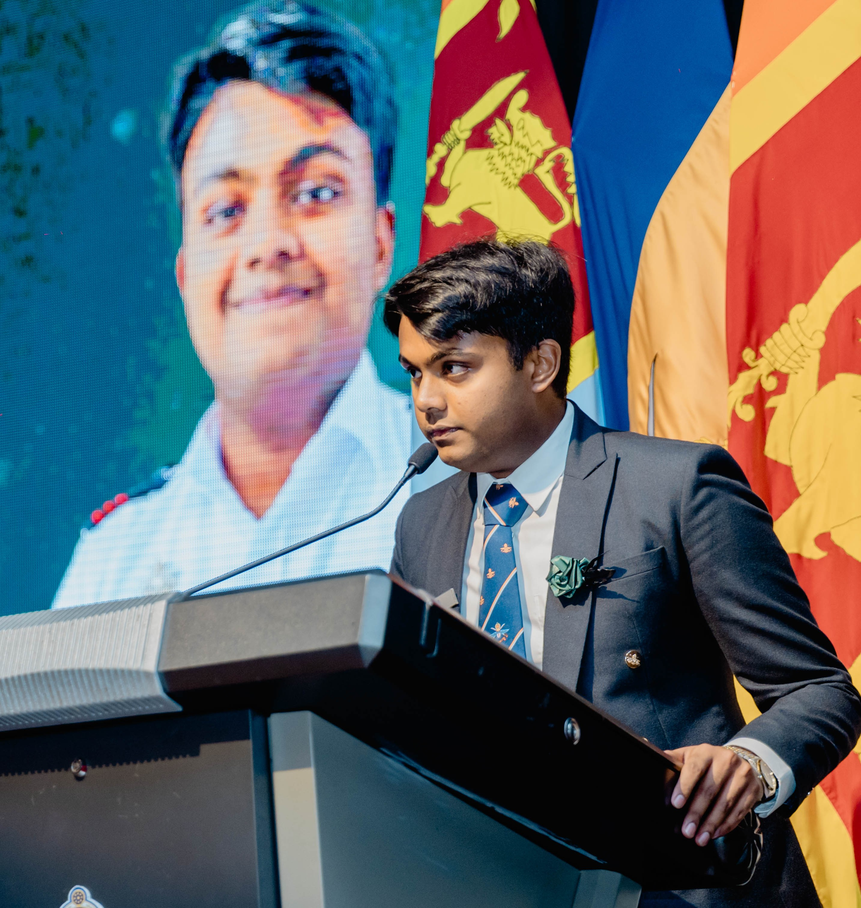
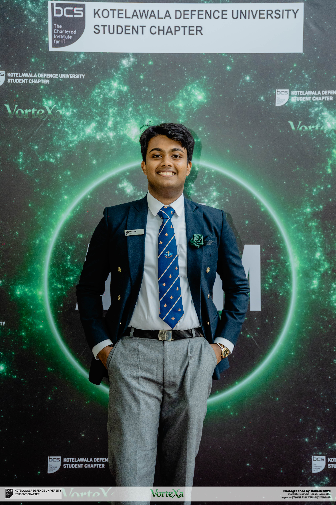
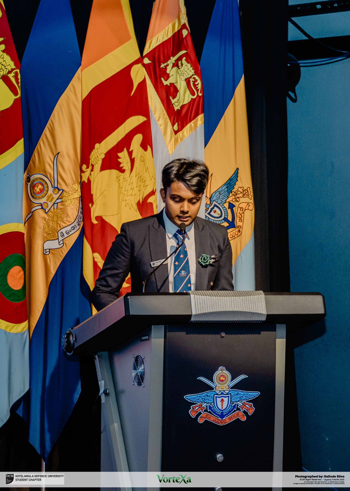

MEET THE CO-FOUNDER
Pamindu
Karunadasa.
Co-founder & Chief Executive Officer
An engineering mind.
A commitment to education.
Pamindu Karunadasa is Co-founder and CEO of OULU Academy and a Computer Engineering undergraduate at General Sir John Kotelawala Defence University in Sri Lanka.

BACKGROUND & PURPOSE
Where education
meets possibility.
His interests bring together software, applied AI, and the people who use them.
At OULU Academy, Pamindu serves as Co-founder and CEO. The academy focuses on Advanced Level education in Sri Lanka, with a teaching team and programmes dedicated to students’ academic progress.
Alongside his studies, his project work explores sign language recognition, computer vision, desktop and mobile applications, and digital design. His public portfolio documents the ideas, implementation, and scope of these projects.
He has also contributed to student technology, design, and community initiatives through BCS, IEEE Computer Society, and ERIC at KDU.
More about his background on LinkedIn- AT OULU ACADEMY
- Co-founder & CEO
- STUDYING
- Computer Engineering at KDU
- BASED IN
- Sri Lanka
KDU COMMUNITY / PHOTOS
Moments from the community.
Pamindu Karunadasa at KDU student events, from the BCS chapter’s annual general meeting to CRE8X 3.0.


At Vortexa 2026
Pamindu Karunadasa at the BCS KDU Student Chapter annual general meeting, Vortexa 2026.
Photography: Kalindu Silva · Legacy Events 2026
Opening CRE8X 3.0
Pamindu Karunadasa taking part in the lamp-lighting ceremony at CRE8X 3.0, KDU.
Photography: Madubhash Attanayake Photography · event credits retained in photograph
A moment at the lectern
Pamindu Karunadasa speaking at the BCS KDU Student Chapter annual general meeting, Vortexa 2026. Black-and-white photograph.
Photography: Kalindu Silva · Legacy Events 2026

Addressing the chapter
Pamindu Karunadasa delivering an address at the BCS KDU Student Chapter annual general meeting, Vortexa 2026.
Photography: Kalindu Silva · Legacy Events 2026BEYOND THE ACADEMY
Ideas, put into practice.
A selection of Pamindu’s technology work and published resources.
SignSpeak
A team project exploring sign recognition, webcam tracking, speech output, and a 3D hand viewer.
LeafLens
An image-classification prototype for paddy disease and tea-leaf assessment.
Sign Language Recognition Dataset
A video collection compiled and published on Kaggle, with attribution to SignASL and its contributors.
LEARN WITH OULU
Your next chapter
starts here.
Explore our Advanced Level programmes and meet the teaching team. Visit us at 23/A Heenati Kumbura Rd, Sri Jayawardenepura Kotte, or view our location on Google Maps ↗.